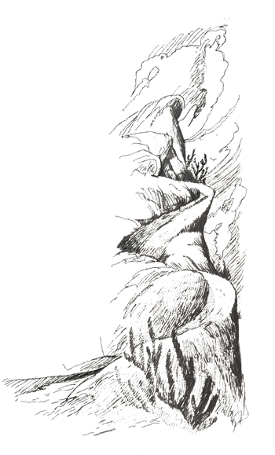

O dia seguinte amanheceu tão quente que o Arrelia e as crianças não conseguiram dormir até mais tarde como pretendiam. Mal havia clareado e todos eles se encontravam prontos para sair. O hotel ainda estava silencioso. Não havia outra pessoa fora do quarto. O Arrelia deu três batidas com a bengala no soalho da varanda e gritou:
- Ó de casa!
Demorou um pouco e surgiu o dono do hotel, com cara de sono, esfregando os olhos:
- Queremos aproveitar o dia. Vamos passear. Dá para o senhor servir-nos o café? – disse o Arrelia.
O homem bocejou, esfregou as mãos e respondeu com cara de conformado:
- Que remédio? O senhor já me acordou mesmo e acredito que aos outros também, batendo com esse porrete!
- Porrete? Isto é uma bengala e das boas! Agora ela ficou “ofendiuda”. Confundi-la com um porrete! É coisa que se faça?
- Está certo, está certo! – exclamou o dono do hotel. Apressando-se em direção à cozinha.
O Arrelia e as crianças acomodaram-se à mesa e ficaram à espera do café. Estavam impossíveis naquela manhã. Enquanto esperavam, começaram, na falta de coisa melhor, a batucar na mesa um samba daqueles. As crianças tamborilavam com os dedos e o Arrelia batia com a bengala marcando compasso como se estivesse batendo num bumbo. Carlinhos viu uma caixa de fósforos em cima de outra mesa, apanhou-a e acrescentou mais um instrumento à “orquestra”. O dono do hotel veio correndo, enxugando as mãos numa toalha que fazia as vezes de avental:
- Por favor! Parem com esse barulho! Os outros hóspedes querem dormir!
Jaci, que era muito espirituosa, resolveu brincar com o coitado:
- Ele está pedindo para entrar na nossa roda. Será que pode, Arrelia?

O Arrelia, percebendo a brincadeira, concordou com entusiasmo:
- É claro! Quanto mais gente, melhor! Venha sentar-se!
As outras crianças também perceberam e entraram na brincadeira, pedindo para o homem sentar-se à mesa. Sérgio levantou-se e, muito sério, apanhou e trouxe uma cadeira para o homem, que estava vermelho de raiva.
- Eu não quero batucar! – gritou ele. Quero que parem com isso!
- Pois então – tornou o Arrelia. Se o senhor quer batucar é só sentar-se aqui! Teremos imenso prazer! Não se acanhe! A gente vê na sua cara que o senhor está com vontade!
- Aí! Não aguento mais! O que foi que fiz? O que foi? – gritou o homem com as mãos para cima, voltando à cozinha.
A batucada prosseguiu. Um momento depois ele voltou com o café. Suas mãos tremiam tanto que quase derrubou a bandeja. Diante do café a batucada parou. O homem retornou à cozinha.
- O pobre ficou por conta – sussurrou Jaci.
O Arrelia, atacando um belo pedaço de pão com manteiga, respondeu:
- E não é para menos. Vocês fizeram uma batucada infernal! Tem cabimento>
As xícaras das crianças pararam no ar:
- Nós?!

- E você não batucou, Arrelia? – perguntou Jaci.
- Eu não! Imaginem se eu ia fazer isso! Foi a minha bengala, essa sem-vergonha!
- Ah! – exclamaram todas.
Jaci acabou primeiro de tomar o café e enquanto esperava que os outros terminassem, encheu outra xícara, sem açúcar, acendeu um fósforo e encostou-o ao café. O Arrelia ficou observando de boca aberta o que fazia. Não podemos mais, quis saber:
- O que você está fazendo? Dando café ao fósforo? Mas está amargo!
- Não. Estou tirando a sorte.
- Sorte?
- Pois é. A gente fazendo isto, surgem várias figuras no café. Olhe.
Não só o Arrelia mas todas as outras crianças espicharam o pescoço. Jaci continuou:
- A gente pode adivinhar a sorte pelas figuras. Não compreenderam? Agora formou um avião. Quer dizer que vou viajar de avião, entenderam? E assim por diante. Basta saber interpretar.
Todos os outros terminaram rapidamente o café, despejaram nas xícaras o resto do bule e começaram também a brincadeira. Aí Carlinhos perguntou:
- E isso que apareceu na minha xícara o que é?


- Deixe ver – pediu Jaci, levantando-se. Hum . . . Parece, parece . . . Já sei! Parece um dragão! Quer dizer que você vai encontrar um dragão!
- Um dra-dra-gão? – gaguejou Carlinhos, recuando-se como se o dragão estivesse na própria xícara.
- Arre, Jaci! Você mata o pobre de susto! Veja a “caura” dele! – exclamou o Arrelia.
- Mas é verdade! – confirmou a menina. Tudo que aparece no café acontece um dia!
Carlinhos estremeceu-se num arrepio de medo. Jaci prosseguiu:
- Mas o Carlinhos é corajoso. Não tem medo de nada. Ainda bem que é ele quem vai encontrar o dragão!
O Arrelia, vendo que o dono do hotel vinha vindo outra vez, levantou-se e pediu às crianças:
- Vamos embora antes que o homem nos ponha à força na rua.
Saíram. Não havia ninguém nas ruas. Ainda era muito cedo. Foram andando, deixaram a cidade e continuaram pelo campo. Ali muitas pessoas já estavam em atividade. Alguns homens passavam com a enxada no ombro, outros, a cavalo, tocavam o gado para o pasto. O Arrelia e sua turminha seguiram para uns morros que ainda estavam bem longe. Pelo caminho, conseguiram diversas frutas que iam sendo devoradas rapidamente.
Os morros, que de longe não pareciam muito altos, de perto chegavam a desaminar. Mesmo assim resolveram escalá-los.
- Oba! Vamos fazer “arpenismo”! – gritou Carlinhos, pulando de entusiasmo.
- Alpinismo! – corrigiu Jaci.
Carlinhos virou-se, ofendido:
- Você entendeu, não entendeu? Portanto . . .
O Arrelia interferiu:
- Vamos subir, criançada! Precisamos poupar o fôlego!
Começaram a subir com vontade, mas logo se cansaram. O Sol estava tão quente que derretia o ânimo de qualquer um. Assim que encontraram um lugar favorável, largaram-se no chão. O Arrelia espetou a bengala e colocaram nela tudo o que foi possível, inclusive o chapéu dele. Iberê viu qualquer coisa no meio do mato e perguntou:
- O que é aquilo, Arrelia? Uma caveira de que bicho?
O Arrelia esticou o pescoço:
- É . . . é . . . Parece uma caveira de burro.
- De burro? Mas que burro burro! – exclamou o menino. Vir aqui em cima para quê?
- Sei lá. Vai ver que foi trazida por alguém. Então quer dizer que somos burros porque viemos aqui?
Todos deram risada. O Arrelia continuou:

- Se ficarmos neste lugar morreremos assados. Vamos ver se encontramos um abrigo.
Andaram, rodearam e deram com uma gruta ampla e convidativa. Entraram e cada um procurou um lugar para sentar-se. O Arrelia largou-se numa pedra como se fosse a mais macia das poltronas.
- Agora sim! – suspirou ele. Melhorou bastante!
Todos concordaram.
- O único mal – prosseguiu o Arrelia – é que os dragões sempre moram em grutas e é possível que algum more aqui
Carlinhos saltou como se fosse de mola:
- E eu vi um dragão na xícara de café!
O Arrelia percebeu que o menino estava mesmo apavorado e acalmou-o:
- É brincadeira! Aqui não tem! Não vê que esta gruta é pequena para um dragão morar?
Carlinhos sentou-se outra vez, meio desconfiado. O Arrelia continuou:
- Dizem que há um dragão na Caverna dos Suspiros, em Fernando de Noronha.
- Você esteve lá? – quis saber Iberê.
- Não, não estive. Ouvi falar. Dizem que ninguém tem coragem para verificar se é verdade. Alguns afirmam ter visto o dragão. Ele monta guarda a um fabuloso tesouro que está escondido na gruta.


Isto aconteceu na época em que os piratas infestavam os mares. Como vocês sabem, os piratas eram loucos por tesouros. Acho que não pensavam noutra coisa. Bastava que descobrissem algum valor e pronto! Já iam atrás! Um dos piratas, chamado Kid, navegava em pleno mar quando viu que estava sendo perseguido por navios de guerra. Tratou de fugir. Sabendo que acabaria por ser capturado, pois os perseguidores eram muito mais rápidos do que ele, pensou num modo de esconder o que lhe era mais caro: o tesouro que levava. Depois de navegar certo tempo, procurou a ilha mais próxima. Na ilha encontrou a Caverna dos Suspiros e mandou que alguns de seus marinheiros colocassem bem lá dentro a arca do tesouro.
Tudo foi feito muito depressa porque os navios de guerra se aproximavam velozmente e logo chegariam ali.
Assim que o tesouro foi escondido, o pirata e seus marinheiros procuraram escapar para o alto mar. Fizeram tudo o que foi possível. Os navios perseguidores encontravam-se agora muito perto. Os piratas, vendo que a abordagem ia ser inevitável, trataram de preparar-se. Foi um corre-corre medonho. Apontaram as armas e esperaram. Os perseguidores, porém, não estavam dispostos a lutar com aqueles homens que não ligavam para a vida quando em combate e resolveram afundar o navio. O navio foi afundado e os piratas abandonados à sua sorte. Morreram todos afogados, menos Kid, que, ferido, conseguiu arrastar-se até à praia. Como os perseguidores não tinham visto o pirata esconder o seu tesouro, tomaram o rumo de volta.
Kid morreu. Antes de morrer, porém, encontrou um dragão que andava tranquilamente pela praia, levou-o ao tesouro e disse-lhe:
- Se você guardar para sempre este tesouro, poderá ficar dono dele. Mas não poderá deixar que ninguém toque nele!
O dragão aceitou a proposta e guardou o tesouro.
Mas, Arrelia, para que um dragão quer um tesouro se ele não sabe gastar? – interrompeu Jaci.
- Talvez pelo prazer de sentir-se dono de uma coisa tão valiosa. Não há pessoas que são assim?
O dragão abriu a arca e ficou “encantaudo”. Quanta coisa maravilhosa! E era tudo dele!
Poucas pessoas conseguiram ver o dragão. As que o viram nunca mais chegaram perto daquele lugar.
- E como ele é? – quis saber Marisa, sentando-se nos joelhos do Arrelia.

- Dizem que tem o tamanho de três cavalos, de comprido, fora o rabo, e é mais alto do que um elefante. Seu corpo é cheio de escamas e é todo verde. Tem o rabo muito comprido, terminando em seta. As patas são guarnecidas por poderosas garras. A cabeça é impossível de descrever-se. Os olhos são vermelhos como brasas. Tem dentes enormes e uma língua muito comprida. Quando está com raiva costuma pôr fogo pela boca.
- Eu é que não queria ver esse bicho! – disse Sérgio depois de haver imaginado com clareza aquela monstruosidade.
- Nem eu! – exclamou o Arrelia limpando o suor do rosto. Descansou um pouco e prosseguiu:
- Embora o dragão esteja ali há muitos anos, só houve um caso grave. Eulália era a moça mais linda do lugar. E também a mais descrente quanto à existência do dragão. Quando ela chegava muito perto da gruta, quem percebia gritava de longe para que ela se afastasse dali. E ela se afastava, não por medo e sim para não parecer teimosa pois era muito delicada. Quando alguém se aproximava da gruta, o dragão punha a cabeça para fora e lançava fogo, fazendo a pessoa correr mais “depreussa” do que o pensamento. Quando era Eulália que estava por perto, ele ficava quietinho, escondido.
- Por quê, Arrelia? – perguntou Jaci.
- Acho que ele havia notado quanto era bonita e estava gostando dela.
Como ele não saía para assustar a moça, ela não conseguia vê-lo e portanto não acreditava nele. Assim, foi chegando cada vez mais perto. Um dia, estando a moça de costas para a gruta, não viu o dragão sair de mansinho e vir para onde ela se encontrava.
Quando o Arrelia chegou neste ponto, as crianças nem respiravam. Todas demonstravam seu nervosismo por vários modos: torciam as mãos, mordiam os lábios, faziam careta.
- Ai a “coitauda” percebeu que alguém lhe estava atrás, mas era tarde. O dragão agarrou-a e correu para a caverna. Os que estavam por perto ouviram os seus gritos de desespero. Ninguém sentiu coragem de enfrentar o monstro. Apenas gritaram:
- Largue a moça, bandido! Largue a moça!
Ele nem tomou conhecimento e entrou com ela, sumindo dentro da gruta. Nunca mais a pobre saiu de lá. Já faz muitos anos e, segundo alguns que a viram, não de muito perto, é claro, ela não envelheceu. Ficou como estava. Por certo foi algum feitiço do dragão.
- E por que o dragão a roubou? – quis saber Iberê.
- Porque era bonita, ora. Da mesma forma com que ele guardava o tesouro, cismou de guardar a moça.
Os que a viram dentro da gruta dizem que anda coberta de joias, naturalmente emprestadas pelo dragão. Neste ponto ele desobedeceu ao pirata, não é mesmo?
- E de que adiante enfeitar-se se não pode deixar a gruta? – interrogou Sérgio.
- Naturalmente ela ainda conserva um pouco de vaidade. Depois, só o prazer de usar aquelas joias . . .
-Eu é que não faria isso! – exclamou Marisa horrorizada, levantnado-se dos joelhos do Arrelia.
- Acho melhor nós irmos saindo. Ninguém pode jurar que aqui não more algum dragão. Um pequenino, é lógico. Não quero dar uma “corrida”!

Nem ele havia terminado de falar e as crianças já estavam do lado de fora.
- Então? – perguntou ele. Vamos continuar a subida ou preferem descer?
Todos preferiram descer. E o fizeram na maior das arruaças. Carlinhos, que descera na frente, escondeu-se atrás de um arbusto e esperou. Quando o primeiro ia passando, que era Sérgio, ele gritou com uma voz cavernosa: “Sou o dragão!” e Sérgio tornou a subir, dando um encontrão no Arrelia. Lá embaixo, Carlinhos se dobrava de tanto rir. Sérgio desceu novamente, louco para vingar-se mas tudo acabou em boa paz. Marisa deu a mão ao Arrelia e perguntou-lhe:
- Queria saber uma coisa antes e acabei-me esquecendo. Por que o nome daquela gruta é Caverna dos Suspiros?
- A versão que achei mais interessante é esta: algumas pessoas que tiveram a coragem de passar mais ou menos perto da gruta, contaram que a moça prisioneira do dragão costumava dizer: “Ah se eu pudesse sair daqui! Se eu pudesse ir para minha casa!” e depois dava uma porção de suspiros. Era sempre assim. “Suspirauva” que dava pena. O povo, que antes chamava a gruta de Caverna do Dragão, com o tempo passou a chama-la de Caverna dos Suspiros.
- Ah! – exclamou Marisa. Agora entendo!
Depois que desceram o morro, tomaram um caminho que seguia pelo campo até perder-se de vista: o Arrelia atrás, conversando com Marisa, e o resto da turminha na frente, numa algazarra terrível. Sérgio e Carlinhos eram piratas, Iberê era o dragão. Jaci era a prisioneira da Caverna dos Suspiros.